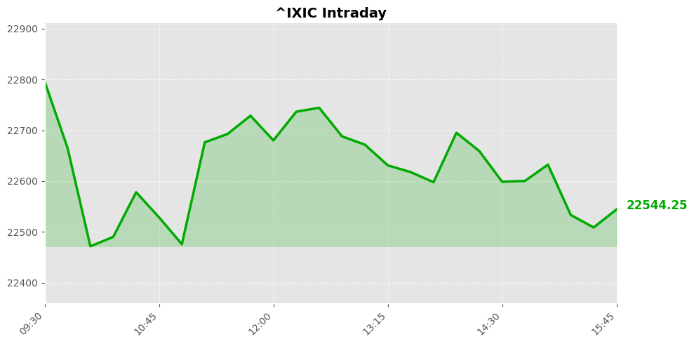
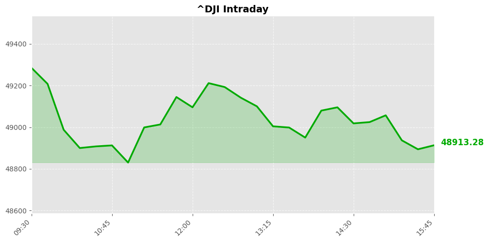
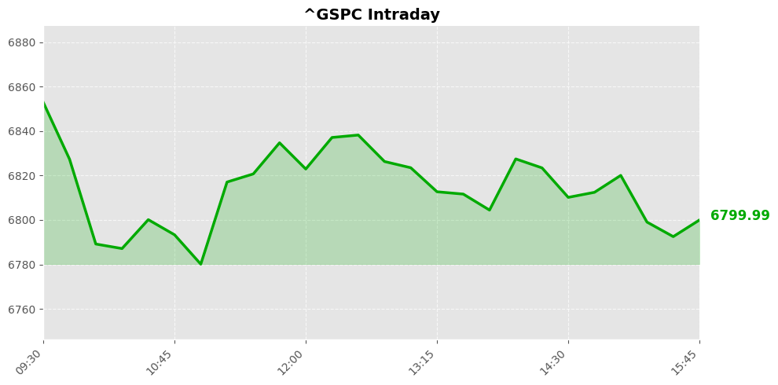

Daily Market Briefing
Market Overview



Market Analysis
The recent trading session reflects a notable retreat across major U.S. equity indices, with the NASDAQ Composite, Dow Jones Industrial Average, and S&P 500 all experiencing declines of approximately 1.2% to 1.6%. The NASDAQ, heavily weighted toward technology and growth stocks, led the downturn, suggesting increased investor caution or risk aversion within sectors sensitive to interest rate movements and broader economic signals.
Several factors may be contributing to this broad market decline. Heightened concerns over inflationary pressures, potential monetary policy tightening, or geopolitical uncertainties can prompt investors to reduce risk exposure. Additionally, recent macroeconomic indicators—such as slowing economic growth or mixed corporate earnings reports—might have dampened bullish sentiment. The sharpness of the declines indicates a shift toward a more cautious or defensive market stance, possibly driven by profit-taking after recent gains or anticipatory adjustments ahead of upcoming economic data releases.
Market sentiment appears to be cautious, with investors likely reassessing valuations amid uncertain economic outlooks. The synchronized decline across major indices suggests a broader risk-off environment rather than sector-specific issues. Looking ahead, traders and investors will be closely monitoring upcoming economic reports, Federal Reserve statements, and geopolitical developments to gauge the potential trajectory of the markets.
In summary, the recent session underscores a period of heightened uncertainty and risk aversion, with broad-based declines hinting at cautious investor sentiment. Market participants should remain attentive to macroeconomic signals and policy developments, as these will significantly influence the near-term direction of the U.S. equity markets.
Today's Headlines
News Analysis
Market Focus Points Today:
-
Retirement Planning and Social Security
A significant portion of respondents now cite Social Security eligibility as a primary reason for retirement decisions, highlighting ongoing demographic shifts and the importance of social safety nets. This underscores potential impacts on consumer spending patterns and labor supply dynamics. -
Healthcare Pricing and Accessibility Initiatives
The upcoming launch of TrumpRx, a direct-to-consumer drug site, signals a push toward increased healthcare transparency and potential cost savings. However, uncertainties remain regarding its real benefit, especially for insured consumers, which could influence pharmaceutical industry dynamics and healthcare market perceptions. -
Tech Sector and Cloud Competition
Despite Microsoft’s recent stock decline following Alphabet’s stellar earnings, analysts remain cautiously optimistic about cloud growth prospects, particularly for Azure. The competitive landscape in cloud computing continues to be a key market focus, with potential implications for industry giants. -
Precious Metals Market Fluctuations
Silver’s sharp decline, contrasted with gold’s relative stability, indicates a volatile precious metals market influenced by macroeconomic factors like inflation expectations, dollar strength, and geopolitical tensions. This volatility could impact related assets and mining sectors. -
Consumer Goods and Retail Outlook
Estée Lauder’s stock plunge following an underwhelming profit outlook signals investor concerns over consumer discretionary spending and profit margins in premium segments. Such signals are vital for retail and luxury brands' outlooks.
Potential Market Impact Factors:
-
Demographic Shifts & Retirement Trends: The emphasis on Social Security eligibility as a retirement driver may lead to increased demand for income-generating assets like bonds, and could influence labor market participation rates.
-
Healthcare Policy & Pricing Dynamics: The launch of TrumpRx introduces a new channel for drug purchasing, potentially pressuring pharmaceutical pricing strategies. However, if cost savings are limited for insured patients, the market may remain skeptical, impacting pharmaceutical valuations.
-
Tech Sector Valuations & Growth Outlooks: The divergence between Alphabet and Microsoft earnings underscores the importance of cloud market share and growth prospects. Microsoft’s future performance may hinge on Azure’s ability to catch up, influencing tech stock valuations broadly.
-
Precious Metals Volatility: Silver’s rapid decline amid gold’s stabilization reflects shifting investor sentiment, possibly driven by macroeconomic data and geopolitical factors. This could lead to increased trading volatility in commodities and related sectors.
-
Consumer & Retail Sentiment: The underwhelming profit outlook from Estée Lauder signals caution in luxury and discretionary spending, which could ripple across consumer-facing sectors, affecting earnings forecasts.
Industry Trends Worth Noting:
-
Rising Significance of Digital Health Initiatives: The government’s push for direct-to-consumer healthcare platforms suggests an ongoing trend toward digital health transparency, which may reshape pharmaceutical marketing, pricing strategies, and healthcare access.
-
Cloud Computing Competition Intensifies: With Alphabet’s strong earnings and Microsoft’s cautious outlook, industry rivalry in cloud services is intensifying, likely prompting increased R&D investments and strategic alliances.
-
Precious Metals as Economic Indicators: The recent volatility underscores metals’ role as macroeconomic barometers, reflecting broader concerns such as inflation, dollar strength, and geopolitical stability.
-
Shift Toward Fixed Income for Retirement: With stocks appearing riskier for near-retirees, the move toward bonds and other fixed-income assets is expected to continue, influencing bond yields and asset allocation strategies.
Overall, today’s market landscape is characterized by cautious optimism amid macroeconomic uncertainties, technological competition, and evolving healthcare and demographic trends. Investors should pay close attention to policy developments, industry earnings, and macroeconomic signals to navigate potential volatility effectively.
Economic Indicators
Inflation Indicators
Employment Indicators
Consumer Indicators
Community Hot Stocks
| Rank | Symbol | Mentions | Source |
|---|---|---|---|
| 1 | AMZN | 128 | |
| 2 | MSTR | 106 | |
| 3 | RDDT | 98 | |
| 4 | MSFT | 97 | |
| 5 | NET | 72 | |
| 6 | BEAT | 68 | |
| 7 | META | 65 | |
| 8 | GOOG | 61 | |
| 9 | APP | 60 | |
| 10 | HIT | 60 | |
| 11 | SNAP | 60 | |
| 12 | HOOD | 57 | |
| 13 | NVDA | 55 | |
| 14 | LUCK | 55 | |
| 15 | VS | 54 | |
| 16 | FACT | 51 | |
| 17 | AMD | 46 | |
| 18 | TURN | 42 | |
| 19 | PUMP | 42 | |
| 20 | GLAD | 41 |
Market Outlook
The recent market performance reflects a notable decline across major indices, with the NASDAQ, Dow, and S&P 500 all closing lower by approximately 1.2% to 1.6%. This broad-based correction suggests heightened investor caution amid prevailing uncertainties.
Key factors influencing the near-term outlook include ongoing geopolitical and policy developments. The launch of TrumpRx, a government-backed drug platform, introduces a potential shift in the healthcare sector’s dynamics, though market skepticism persists regarding its impact on drug prices for consumers. Additionally, positive news about select non-tech stocks indicates some sector-specific resilience, hinting at possible pockets of opportunity amid the downturn.
The market's downward momentum signals a risk aversion environment, with investors likely to remain cautious. The primary risks to watch include geopolitical tensions, policy shifts in healthcare and technology sectors, and macroeconomic indicators such as inflation data and interest rate expectations. Any unexpected policy announcements or economic surprises could amplify volatility.
In this context, investors should prioritize risk management, maintaining a balanced portfolio with diversification across sectors. Short-term traders might consider adopting a cautious stance, watching for potential rebounds or further declines. For longer-term investors, this dip could present opportunities to selectively add positions in quality stocks, particularly those demonstrating resilience during downturns.
Overall, expect continued volatility over the next 1-2 trading days, with downward bias prevailing amid external uncertainties. Vigilance around macroeconomic releases and policy developments will be crucial for navigating this environment effectively.
Follow Us

Scan to follow StockGate
For more US stock market insights